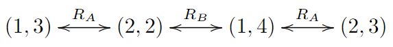

This problem is also know as the "Sum and Product" problem which is a variation of the Freudenthal problem presented in 1969 [1]. An formal analysis using Epistemic knowledge for the Sum and Prodct problem model exists for example in [2] 1.
The puzzle is very similar to Rinekes birthday problem discussed during the course. However, there is a key differenct. In Rinekes birthday puzzle we assume the identity of one of the agents. However, in this puzzle we are a third agent who has no impact on the conversation and is only able to listen. Later on we will also consider this puzzle from the perspective of the agents. The problem looks quite intimidating at first, but the problem reduces relatively quickly when using a computer. We will start by noting that the pairs of numbers have no inherent ordering to them, hence the pairs (3,7) and (7,3) are equivalent. From here on we will denote each pair as (x,y) with x<=y.
For the sake of explanation, let us assume that the random numbers are chosen between [1,6) instead of [1,100). We will use this reduced example to show how we can reduce the set of possible number combinations for each anounchement.
sums = {We can use this representation to easily find all the states in which an agent 'would know' the numbers. Let us consider the agent Alice and Alice knows that the sum is 8. Then the states (3,5) and (4,4) are equally likely from the perspective of Alice. If we reverse this reasoning, if Alice knows that there is only one possible pair for her sum value, then she knows the original numbers, namely that pair.
When Bob announces that he does not know the numbers, then we know that it is not any product with only a single possible pair. We can then reduce the set of possible pairs by removing all pairs which do not have any other pairs with the same product. This would result in the following sets:
removed = {If Bob did know the numbers in the first step then Alice would know that the numbers correspond to a pair in the 'removed' set above. Similarly, when Alice announces that she does not know the number, we can remove all pairs for which there does not exist another pair with the same sum from the set of possible pairs. If we do this we get the following sets:
removed = {This can be repeated to obtain all pairs removed during each step. However, we would like to note that it is not always the case that all states are removed by this process.
In the next sections (accessible using the bar at the top) we will discuss how we can formulate this problem to epistemic logic as well as looking at how we can create an algorithm that finds all pairs that can be deduced by the agents in both the context of formal logic and a computer algorithm. We have also implemented this algorithm using javascript to provide a visual and interactive demo of the algorithm. Lastly we have added an appendix indicating how the problem can be attempted without using public announcements.
Do we know that Alice knows (x, y)? We consider (2, 2) and (4, 1) as possible. As already explained, if (2, 2), then Alice would know (2, 2), after we states that we do not know. If on the other hand (4, 1), then NA = 5 and Alice would consider (4, 1) or (3, 2) as possible. However, if (3, 2) then NB = 6 and the only possible products are (3, 2). Alice can eliminate (3, 2) because we stated that we do not know. Therefore Alice would know (4, 1). So we know that Alice either knows (2, 2) or of (1, 4).
So after we stated that we do not know, Alice states that she knows. Unfortunately this is old news for us and we still do not know if (2, 2) or (1, 4). An Kripke model that visualizes this is shown below.
In order to find the solution to the provided puzzle we need to find the pair which is removed at the 15'th announcement. This solution can easily be computed using the provided code (TODO, update this). When running the code we find that the pair (77,84) is removed at this iteration.
However, for this puzzle we assumed that at a specific point in the conversation one of the agents knew the numbers. However, one may ask if there always exists a solution to this problem assuming 2 arbitrary random integers below a predefined threshold.
In the next section we will look at the generalizability of this problem and look if there are specific conditions which are necessary and or sufficient for convergence. We will also restate the puzzle in terms of a logic language (TODO: more specific) and consider if the problem can still be solved without the prior knowledge about the upper bound of the generated random numbers.
# State the problem in terms of epistemic logic # Generalisability of puzzle to arbitrary random values ## Necessary conditions for convergence? ## Sufficient conditions for convergence? # Generalisability if we do not provide random number bound[1] Freudenthal, H.: (formulation of the sum-and-product problem). Nieuw Archief voor Wiskunde 3(17) (1969) 152
[2] van Ditmarsch H.P., Ruan J., Verbrugge L.C. (2005) Model Checking Sum and Product. In: Zhang S., Jarvis R. (eds) AI 2005: Advances in Artificial Intelligence. AI 2005. Lecture Notes in Computer Science, vol 3809. Springer, Berlin, Heidelberg